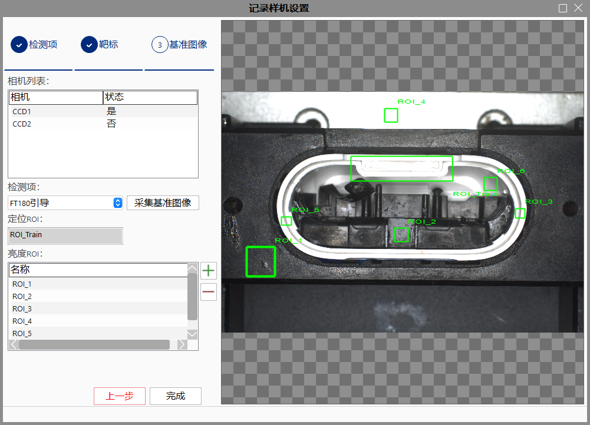

在苹果产线用于对位、机器人引导等项目，使用到了相机和光源作为视觉系统的一部分。在产线的相机及光源安装时，需要现在样机上打样，然后将样机上的相机及光源作为参考，在产线其他机台上进行复制，复制参数包括：相机及光源的安装位姿、相机的设置参数和光源的亮度。每台机器都需要参考样机的安装结果，此过程需要在其他机器上高效准确地复制样机信息。 但复制过程，可能是由经验有限的人员来执行。 因此，需要一个视觉设置工具，可以使复制过程程序化，视觉安装结果可验证，帮助AE/客服工程师高效、准确地安装相机和光源。
点击“文件”菜单中的“记录样机设置”按钮，如下图所示：
打开“记录样机设置”对话框，如下图所示：

点击“记录样机设置”窗口中的“增加”按钮，弹出对话框，如下图所示：

选择检测项使用的图像源（采集）工具，编辑检测项、序列码、图像旋转和图像镜像信息，如果该检测项使用到了光源，需要编辑光源信息，点击上述对话框中的“＋”，添加光源，用户可双击光源，编辑光源控制器、通道和亮度，编辑结果，如下图所示：

选中一个光源，点击上述对话框中的“－”，可删除光源，如图1-5所示，删除2号光源，如下图所示：
点击上图对话框中的“确定”按钮，增加一个检测项，点击“取消”或对话框的“×”，取消增加检测项。 点击图1-2中的“采集图像”按钮，使用当前采集工具采集一张图像，并在图像上生成一个“定位ROI”区域和“光源ROI-1”区域，点击上图中的“＋”号，再增加两个“光源位姿调整ROI”，拖动至感兴趣区域（依据项目需要而定），如下图所示如下图所示：

“定位ROI”区域和“光源ROI-1”区域可拖动。“定位ROI”用于调整机台相机的最终位置，“光源ROI-1”用于调整当前检测项光源位姿。“光源ROI”个数上限为5。
选中一个光源ROI，点击“－”按钮，可删除选中的光源ROI。点击“取消”按钮，弹出提示框，如下图所示：

选中检测项列表中需要删除的检测项，点击“删除”按钮弹出对话框，如下图所示：

选择“是”，则删除选中的检测项，选择“否”，退出删除检测项窗口。双击检测项列表中的检测项，弹出修改检测项对话框，如下图所示：

修改检测项对话框操作可参考增加对话框操作步骤。 检测项是为了记录样机的拍照位，有多少个拍照位就记录多少个检测项。
点击上图中的下一步按钮，进入靶标信息采集界面，如下图所示：

在上图中，相机列表显示当前机台连接的相机，双击相机，弹出修改靶标信息窗口，如下图所示：

用户可修改当前相机的光圈、倍率、曝光、增益、Gamma和光源信息。 点击“采集图像”按钮，使用当前相机采集图像，在下图中，可以看到一个“靶标ROI”和“图像质量ROI”的区域，“图像质量ROI”用于复制样机设置过程中与实时采集图像中对应位置的ROI进行质量评价，将ROI拖动至靶标处，点击“获取靶标序列码”按钮，结果如下图所示：
再次点击“采集图像”按钮，提示如下图所示：
点击“是”，重新采集图像；点击“否”，退出重新采集。 点击“上一步”按钮，回到检测项信息采集窗口，点击“下一步”按钮，进入“基准图像”窗口。
点击上图中的下一步按钮，进入基准图像信息采集界面，如下图所示：

操作步骤如下：
Step 1：点击CCD1列表行；
Step 2：选中CCD1下的检测项；
Step 3：点击“采集基准图像”按钮；
Step 4：在图像中拖动“ROI_Train”ROI,此处的ROI用于训练，所以需要拖动到产品的固有特征处，如果所示；
Step 5：添加1~12个亮度ROI（根据项目需要），一般添加3~4个即可；
Step 6：将亮度ROI拖动到产品上，放置在关注的区域上，用于与其他新机台进行对比，检测新机台是否与样机上对应亮度ROI的亮度信息一致，此处主要用于调整新机台的白平衡比率值；
点击“上一步”按钮，回到靶标信息采集窗口，点击“下一步”按钮，进入“样机信息保存”窗口。
点击记录样机设置中的“完成”按钮，进入样机信息保存界面，如下图所示：
操作步骤解释如下：
Step 1：机台信息用于记录本机台的项目名称、工站名称、工站序列码、视觉负责人和视觉供应商，根据实际项目需要填写；
Step 2：X、Y为新机台与样机的拍照位允许的最大偏移量，单位为像素；
Step 3：Rx、Ry、Rz为新机台与样机相机允许的最大偏移角度；
Step 4：Min、Max、Contrast为新机台与样机拍照位的亮度ROI允许的最大误差，分别为亮度最小、最大和对比度误差；
Step 5：R、G、B通道均值为新机台与样机的基准图像中的亮度ROI允许的各个通道均值的最大误差；
Step 6：点击“导出参考信息”，导出收集的样机标准信息；
点击上图中的“取消”按钮，关闭“样机信息保存”窗口，当关闭后，已编辑信息丢失；点击“导出参考信息”按钮，弹出保存保存对话框，如下图所示：

点击“文件”菜单中的“记录样机设置”按钮，弹出打开样机收集信息窗口，如下图所示：
选择已保存的样机信息，点击打开按钮，导入参考数据。
在导入参考样机数据后，打开复制样机设置界面，选择相机为当前机台连接的所有相机（在线），并显示该相机在参考样机上的靶标序列码、光圈、倍率、曝光、增益、Gamma、误差（X、Y、Pixel Size、Rx、Ry、Rz）信息，如下图所示：
当实时靶标图像中的靶标识别完成（成功或失败）后，停止实时采集图像，如需再次识别靶标，需点击“刷新实时图像”按钮，点击“下一步”按钮，进入“清晰度调整”界面。
点击“实用功能”按钮，进入实用功能界面 ，如图2-3所示。
“调试状态”表格信息解释如下（通过，指实时靶标参数与参考靶标参数差的绝对值小于等于允许误差）：
相机，相机名；
使用靶标调整相机位姿，“是”表示使用靶标调整相机已通过；
使用产品调整相机位姿，“是”表示使用产品调整相机已通过；
使用产品调整光源，“是”表示使用产品调整光源已通过。
“光源控制”表格信息解释如下：
搜索结果表格中显示为指定工程中的“通信发送工具”，双击通信发送工具，可将工具添加至“待执行通信发送工具列表”中；
点击“执行”按钮，执行“待执行通信发送工具列表”中的通信发送工具。

点击复制样机设置窗口中的“下一步”按钮，进入“清晰度调整”界面，在界面中用户可以查看当前靶标图像和标准机台靶标图像ROI的清晰度和对比度，同时可以通过修改相机白平衡通道比率更改当前机台实时图像，以修改当前机台靶标图像的清晰度和对比度，如下图所示：
白平衡模式：设置白平衡的模式，只对LBAS彩色相机有效，取值有Continuous、Once、Off；
R通道比例：设置平衡通道值的R值；
G通道比例：设置平衡通道值的G值；
B通道比例：设置平衡通道值的B值；
存储通道：保存相机指定通道的通道比率。

点击复制样机设置窗口中的“下一步”按钮，进入“图像色差校正”界面，在界面中用户可以选择“检测项”，所有检测项为当前待调试相机的检测项，可以看到每一个检测项对应的产品序列码和光源信息，如下图所示：
检测项：检测项名称，用户在“记录样机设置”阶段自定义；
序列码：产品序列码，用户在“记录样机设置”阶段自定义；
相机旋转：逆时针将原始图像旋转一定角度，分为4种角度类型，0度、90度、180度和270度；
相机镜像： 对原始图像进行镜像操作，分为4种类型，无、水平、垂直和水平垂直；
曝光：相机的曝光时间，单位为毫秒；
增益：相机的增益，单位为分贝（dB）；
Gamma：用于调整相机对比度；
相机位姿：X为定位ROI的中心坐标X方向值，Y为定位ROI的中心坐标Y方向值，Rz为定位ROI绕Z轴顺时针方向的旋转角度。

注意
上图中，右边图像中的绿色ROI代表与左图中相同位置的ROI，红色ROI为实时定位ROI（上图中红框与绿框重合）。
检测项：检测项名称，用户在“记录样机设置”阶段自定义；
序列码：产品序列码，用户在“记录样机设置”阶段自定义；
相机旋转：逆时针将原始图像旋转一定角度，分为4种角度类型，0度、90度、180度和270度；
相机镜像： 对原始图像进行镜像操作，分为4种类型，无、水平、垂直和水平垂直；
曝光：相机的曝光时间，单位为毫秒；
增益：相机的增益，单位为分贝（dB）；
Gamma：用于调整相机对比度；
相机位姿：X为定位ROI的中心坐标X方向值，Y为定位ROI的中心坐标Y方向值，Rz为定位ROI绕Z轴顺时针方向的旋转角度。
用户可选用自动模式和手动模式进行复制机台成像色差校正，然后将结果保存至相机中。
手动模式计算如下：
1.手动更改R/G/B通道比率值；
2.实时刷新图像，并显示计算结果；
自动模式下：
点击“计算”按钮，可以自动计算最佳的R/G/B通道比率值。
点击手动/自动模式下的保存按钮，将当前相机的R/G/B通道比率值保存至相机。
计算结果列表：实时显示图像计算结果。
注意
双图像显示区域中，上图为基准图像，下图为实时图像，当实时图像的计算结果与基准图像的计算结果在允许的最大误差范围内时，实时图像对应的参数显示为绿色，否则为红色（此规则适应所有双图像区域显示的界面）。
相机旋转：逆时针将原始图像旋转一定角度，分为4种角度类型，0度、90度、180度和270度；
相机镜像： 对原始图像进行镜像操作，分为4种类型，无、水平、垂直和水平垂直；
曝光：相机的曝光时间，单位为毫秒；
增益：相机的增益，单位为分贝（dB）；
Gamma：用于调整相机对比度；
相机位姿：X为定位ROI的中心坐标X方向值，Y为定位ROI的中心坐标Y方向值，Rz为定位ROI绕Z轴顺时针方向的旋转角度。

当工程中无图像采集工具/图像源工具（系统在线）时，无法添加检测项；
当软件未连接相机时，功能无法使用。
在新机台上导入样机数据时，需要保证新机台与样机所连接的相机个数和名称一一对应；
当使用到光源时，工程中需要有通信发送工具；
当靶标识别完成后，停止实时采集图像，需手动刷新再次采集靶标图像；如果进入产品调整界面，则自动刷新图像；
当软件未连接相机时，功能无法使用。